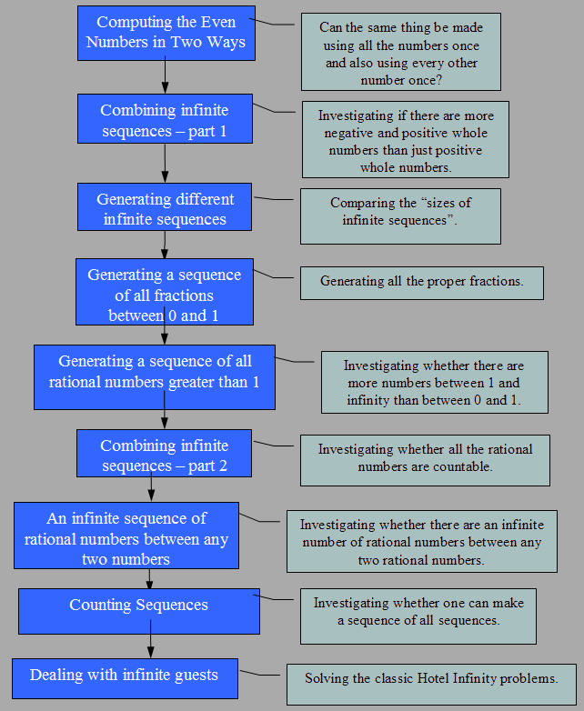

The activity sequence summary can be found here.
Related worksheets:
There is also an activity based upon the ideas of Hotel Infinity that is
based upon interactive puzzles. Teacher guidance for it is
here.
Learning snapshots, Pedagogical advice and teaching tips
Special guidance to teachers are included as Word comments in the worksheets. By
default there are not printed. Change Word from "Final" to "Final showing Markup" to
print or view the comments.
Exploring the cardinality of infinite sets including the natural numbers,
integers, even numbers, fractions, rational numbers, and real numbers. The
cardinality of infinite sets is an important part of mathematics. The topic is
full of surprises and apparent contradictions that have confused mathematicians
and philosophers for millennia.
Historical background on cardinality can be found here.